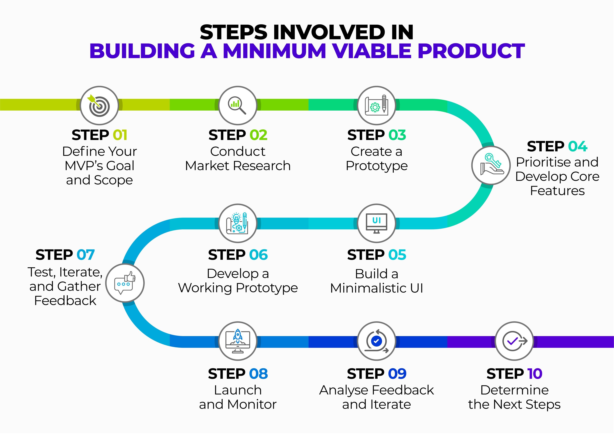

Ma õpin Noore Tarkvaraarendaja eriala
Õpitud aided on:
- Projekti loomine
- Kontoritõõ tarkvara
- Aruti- ja taristus osad
- Multimeedia
WP Portfoolio
MVP mõiste
Minimal Viable Product - Тестовая версия продукта, услуги, товара которая показывает жизнеспособность проекта.
Его делают, чтобы быстро проверить, нравится ли идея, и собрать мнение от пользователей.
Полезность разработки MVP доказывают примеры крупных на данный момент компаний. Например, Даниэль Эк и Мартин Лорентсон в 2006 году
запустили небольшой сервис с одной функцией — потоковая передача музыки. Сейчас мы знаем этот продукт под названием Spotify
